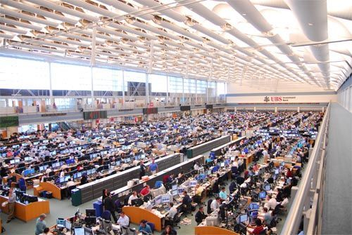

What finance role or career path do you want to understand better?
BUS209 · Fall 2026
FactSet Financial Concepts
Ask better market questions. Find evidence. Explain what it means.
BUS209 · Fall 2026
Ask better market questions. Find evidence. Explain what it means.
Opening conversation
What finance role or career path do you want to understand better?
What company, market, or economic question interests you right now?
What evidence would you like to show a future employer you can find and explain?

Why FactSet matters
The professional workflow
The platform is valuable because it keeps the research process connected.
Define the business, market, or investment issue.
Locate financial data, market prices, news, and estimates.
Compare trends, peers, industries, and economic context.
Determine what the evidence supports—and what remains uncertain.
Communicate the conclusion in Excel, PowerPoint, or a live presentation.
Where FactSet is used
What you will learn
Use leading, coincident, and lagging information to gauge the health and direction of an economy.
Explain the forces behind currency values and how investors and businesses manage currency risk.
Compare yields across bonds and interpret what movements in the yield curve may signal.
Connect company and index performance to relative valuation, growth expectations, and fair value.
How we will learn
Build the financial concept and complete FactSet certification modules.
Use FactSet in class to find, compare, and interpret real financial information.
Explain what the evidence means through live demonstrations and professional deliverables.
Your path through the semester
Explore market information and explain a country-level economic indicator.
Investigate a company, its industry, accounting information, and ESG context.
Apply yield and credit concepts and present fixed-income market evidence.
Deliver the final FactSet presentation and complete required certifications.
Get ready to work
Activate FactSet with your Endicott email address.
Add FactSet 365 to Excel and sign in to the add-in.
Confirm that you can open FactSet for the Web before class.
Your first FactSet task
Company name and ticker
Most recent share price
Market capitalization
One recent news item that matters
What success looks like today
Explain what FactSet helps finance professionals do.
Access FactSet and identify where to get setup help.
Name one market question you want to investigate.
Use the left and right arrow keys to move between slides. Press F for fullscreen.